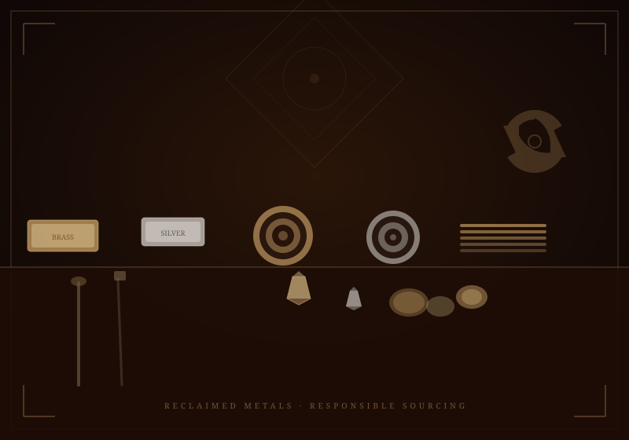

Reclaimed MetalsReclaimed Metals
Silver and brass carry remarkable lives before they reach us. We actively explore opportunities to work with reclaimed and recycled metal — reducing the environmental demand for newly extracted ore without compromising on quality or character. Metal that has lived before brings its own depth to what comes next.